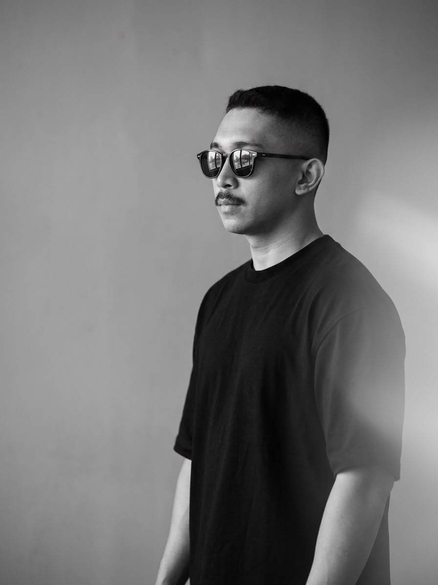
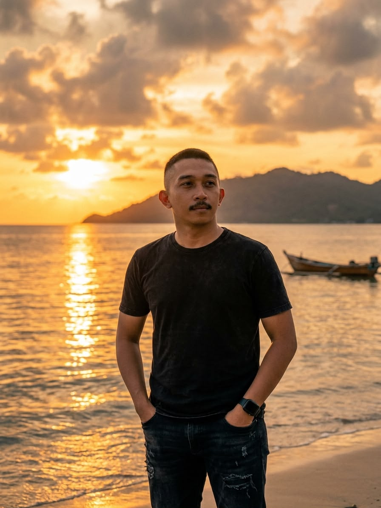
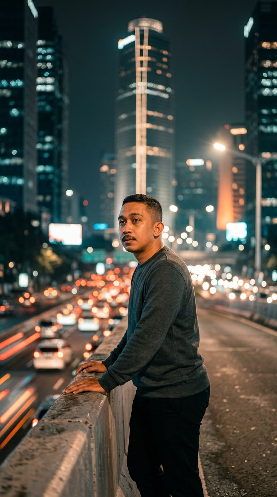
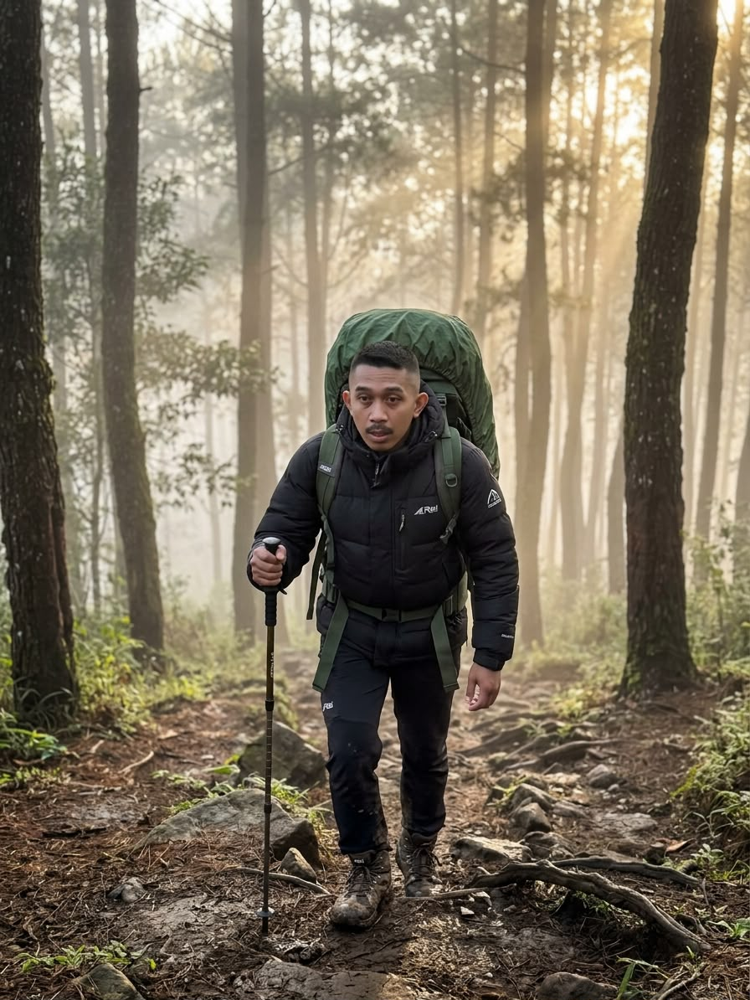

Untuk yang sedang berjuang
“Tidak semua perjuangan langsung terlihat hasilnya. Ada yang diam-diam sedang membentukmu menjadi lebih kuat.”
— Miftahul Munir
PERSONAL WEBSITE • CONTENT CREATOR
Tetapi tentang seberapa kuat kita tetap melangkah, meski jalan tidak selalu mudah.

SELAMAT DATANG DI RUANG SAYA
Saya Miftahul Munir, S.E., lahir di Jeneponto pada 26 Januari 1995 dan saat ini bertempat tinggal di Kabupaten Bantaeng, Sulawesi Selatan.
Di tengah rutinitas sebagai pegawai kantoran, saya menyisihkan waktu untuk berkarya sebagai konten kreator dan membagikan tulisan tentang motivasi, kehidupan, pembelajaran, serta semangat untuk tidak mudah menyerah.
Website ini adalah ruang untuk bertemu dengan siapa pun yang sedang berjuang, belajar, membangun mimpi, atau membutuhkan satu kalimat untuk kembali percaya pada dirinya sendiri.
Jangan takut berjalan pelan.
Takutlah jika berhenti hanya karena lelah.
BACA PERLAHAN
Semoga ada satu kalimat di sini yang datang tepat ketika kamu membutuhkannya.
“Tidak semua perjuangan langsung terlihat hasilnya. Ada yang diam-diam sedang membentukmu menjadi lebih kuat.”
“Kalau hari ini terasa berat, istirahatlah. Tetapi jangan jadikan lelah sebagai alasan untuk berhenti.”
“Masa depan tidak meminta kita sempurna. Ia hanya meminta kita berani memulai dan setia melangkah.”
“Hargai prosesmu. Kamu mungkin belum sampai tujuan, tetapi kamu sudah jauh meninggalkan versi dirimu yang dulu.”

03 — FILOSOFI PERJALANAN
Ada yang melangkah di jalan yang ramai, ada yang harus melewati jalan sunyi. Jangan ukur perjalananmu dengan perjalanan orang lain.
Yang penting bukan siapa yang paling cepat, tetapi siapa yang tetap menjaga arah ketika perjalanan terasa panjang.
“Pelan tidak apa-apa. Asal tetap bergerak.”JOURNAL
Gagasan sederhana yang bisa kamu bawa pulang setelah mengunjungi halaman ini.
Sering kali keberanian datang setelah kita mengambil langkah pertama, bukan sebelumnya.
Baca artikel →Hari ini mungkin hanya satu langkah kecil. Tetapi satu langkah tetap lebih dekat daripada kemarin.
Baca artikel →Kadang jalan yang berubah justru membawa kita kepada tempat yang lebih tepat.
Baca artikel →

Statistik ini berjalan tanpa server dan tersimpan di browser pengunjung. Untuk statistik global semua pengunjung, website perlu dihubungkan ke database/layanan analitik.
09 — MARI TERHUBUNG
Jika tulisan di website ini memberimu sedikit semangat, berarti perjalanan kita sudah saling memberi makna.
TINGGALKAN PESAN
Bagikan satu kalimat
untuk sesama pejuang.
Komentar tersimpan di browser perangkat ini. Cocok untuk versi statis tanpa database.